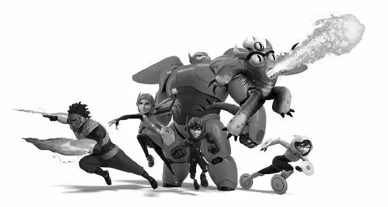

Back at his garage, Hiro burst in with Baymax behind him. He sat down at his computer and accessed Baymax’s super sensor. This enabled him to make code changes directly into Baymax.
Baymax stared at Hiro. Hiro’s eyebrows were furrowed as he concentrated on the programming. “Your blood pressure is elevated. You appear to be distressed,” Baymax said.
“I’m fine,” Hiro snapped, typing faster. “There.” He turned to Baymax. “Is it working?”
“My sensor is now operational,” Baymax replied.
“Good,” Hiro said, and tapped the access port on Baymax’s chest. But the port didn’t open. Hiro tapped it again. “What?”
“Are you going to remove my health-care chip?” asked Baymax.
“Yes. Open,” Hiro said, tapping the port again.
“But my purpose is to heal the sick and injured.”
“Baymax, open your access port,” Hiro ordered.
“Will terminating Callaghan improve your emotional state?” Baymax asked.
“Yes! No... I don’t know!” Hiro said. He removed Baymax’s chest armor to get to the port, but it still wouldn’t open.
Hiro tapped it harder.
“Is this what Tadashi would have wanted?” Baymax asked, and Hiro felt a bit of a sting.
“It doesn’t matter,” Hiro said angrily, although he suddenly began to feel conflicted.
“Tadashi programmed me to aid—”
But before Baymax could finish, Hiro said, “Tadashi is gone.” Then he dropped his head against Baymax’s chest. “Tadashi is gone.”
“Tadashi is here,” Baymax said.
Suddenly, Hiro heard the muffled sound of Tadashi’s voice. He looked up at Baymax in disbelief. Baymax was running the data from the first day he was activated.
“This is Tadashi Hamada,” the muffled voice said, “and this is the first test of my robotics project.”
Hiro could see his brother on Baymax’s display screen. He watched as Tadashi ran test after test, trying to create Baymax. Finally, on his eighty-fourth try, the big white robot next to Tadashi said, “Hello. I am Baymax, your personal health-care companion.”
Hiro watched Tadashi pump his fist and spin around in his chair. “It works! He works! Ah! Yes! This is amazing! You work!” Tadashi cheered. “I can’t believe it! Ha-ha!”
A bitter-sweet smile came over Hiro’s face as he watched his brother. Then Tadashi said, “Okay. All right. Big moment here.” He turned toward Baymax, fingers crossed. “Okay. Scan me.”
On the screen, Baymax stared at Tadashi. “Your neurotransmitter levels are elevated. This indicates you are very happy.”
Tadashi said, “I am. I really am! Wait till my brother sees you!”
A tear ran down Hiro’s cheek.
“You’re going to help so many people, buddy. So many,” Tadashi said. “That’s all for now. I am satisfied with my care.”
And with that, Baymax’s display screen froze on the image of Tadashi. Hiro touched the screen.
“Thank you,” Hiro said, looking up at Baymax. He didn’t need to ask him to open his access port anymore.
Then Hiro heard someone call his name. He turned and saw the whole team standing in the doorway of his garage. By the looks on their faces, Hiro knew they’d seen Tadashi’s video, too. Hiro hung his head. “Guys, I ... I’m ... ,” he said.
Go Go rushed up to him. “We’re going to catch Callaghan. And this time we’re going to make it right,” she said as she hugged Hiro. The rest of the team watched, a little stunned. Was Go Go actually hugging someone?
“But maybe don’t leave your team stranded on a spooky island next time,” Wasabi said.
“Oh, man,” Hiro said, realizing that he’d been wrong to abandon them.
“Nah, it’s cool,” Fred told Hiro. “Heathcliff picked us up in the family chopper.”
“Hiro, we found something you should see,” Honey said. She was holding a hard drive.
Hiro hooked it to his computer and saw a frozen image of the test pilot, Abigail, on his screen. As the video played, Hiro gasped. Abigail was standing with Alistair Krei and another man. “Is that ... Callaghan was there?”
“Yeah, but why?” Go Go asked.
“And they look like they’re good friends,” Fred added.
Hiro was confused. “But Callaghan hates Krei.” He thought back to the time at the Tech Showcase when Callaghan warned him not to take Krei’s offer. “I wouldn’t trust him with your microbots, or anything else,” he had said.
Hiro fast-forwarded to a close-up image of the pilot. He zoomed in. He could clearly see the name on her flight suit. It read Callaghan. “The pilot was Callaghan’s daughter. Callaghan blames Krei.”
Fred nodded knowingly. “This is a revenge story.”
Hiro nodded, too, realizing that Professor Callaghan was after Krei all along. He needed Hiro’s microbots to carry out his revenge. Hiro thought about the awful destruction the portal could cause. “So what are we waiting for?” he said to his friends.
The team prepared to head to Krei Tech’s new campus, knowing it had to be Professor Callaghan’s real target.
